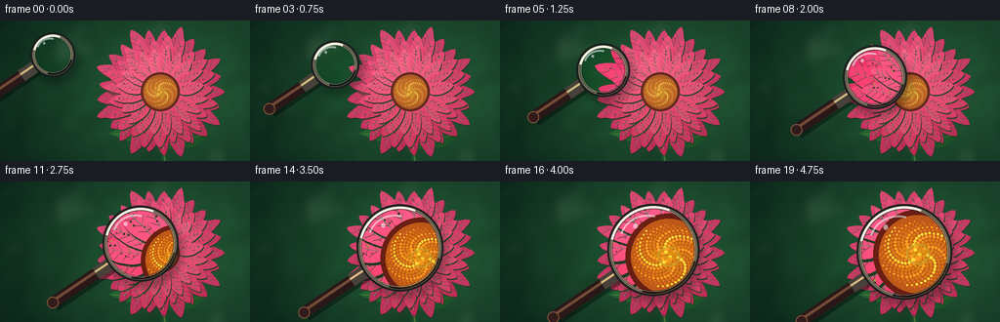
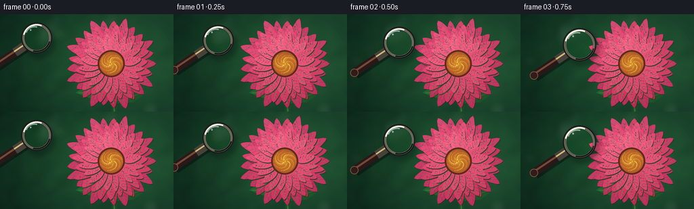
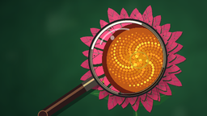

CODING AGENTS AS PIXEL WORLD MODELS
traex/GPT-5.6-Sol · phygen_070
点击播放 · 原生 RGB 像素
逐轮保存的候选
回放视频、检查图与代码变化。
每份候选均可单独播放。实际图片检查记录在下方工具轨迹中。
候选 01播放与检查图
点击播放 · 原生 RGB 像素


展开代码变化
--- 上一保存版本
+++ 本次保存版本
@@ -0,0 +1,276 @@
+from pathlib import Path
+import math
+import numpy as np
+from PIL import Image, ImageDraw, ImageFilter, ImageEnhance
+import artifact_io
+
+# Deterministic procedural macro scene. Render large, then downsample for clean edges.
+W, H, N, S = 256, 144, 20, 4
+HW, HH = W*S, H*S
+rng = np.random.default_rng(70070)
+
+
+def sc(v):
+ return int(round(v*S))
+
+
+def pt(x, y):
+ return (sc(x), sc(y))
+
+
+def lerp(a, b, t):
+ return a + (b-a)*t
+
+
+def smooth(t):
+ return t*t*(3-2*t)
+
+
+def bezier_ease(t):
+ # A gentle, continuously advancing approach.
+ return 1.0 - (1.0-t)**2.15
+
+
+def add_background():
+ yy, xx = np.mgrid[0:HH, 0:HW]
+ # Dark garden backdrop, warm near the blossom and cool in the corners.
+ radial = np.exp(-(((xx-sc(170))/sc(145))**2 + ((yy-sc(70))/sc(100))**2))
+ leftshade = xx / HW
+ arr = np.zeros((HH, HW, 3), dtype=np.float32)
+ arr[..., 0] = 12 + 19*radial + 6*leftshade
+ arr[..., 1] = 39 + 45*radial + 9*leftshade
+ arr[..., 2] = 28 + 20*radial + 8*leftshade
+ # Broad low-frequency organic texture.
+ small = rng.normal(0, 1, (36, 64)).astype(np.float32)
+ noise = Image.fromarray(np.uint8(np.clip(128 + 30*small, 0, 255))).resize((HW, HH), Image.Resampling.BICUBIC).filter(ImageFilter.GaussianBlur(sc(5)))
+ n = (np.asarray(noise).astype(np.float32)-128)/12
+ arr[..., 0] += n*0.9
+ arr[..., 1] += n*2.0
+ arr[..., 2] += n*1.3
+ img = Image.fromarray(np.uint8(np.clip(arr, 0, 255)), 'RGB')
+
+ # Blurred stems, foliage, and creamy bokeh, kept behind the hero flower.
+ soft = Image.new('RGBA', (HW, HH), (0,0,0,0))
+ d = ImageDraw.Draw(soft, 'RGBA')
+ for _ in range(13):
+ x = rng.uniform(-20, 270); y = rng.uniform(0, 150)
+ r = rng.uniform(5, 17)
+ if 105 < x < 238 and 17 < y < 130:
+ continue
+ palette = [(181,213,129,24), (247,221,157,30), (104,177,116,22), (228,246,207,20)]
+ c = palette[int(rng.integers(len(palette)))]
+ d.ellipse((sc(x-r),sc(y-r),sc(x+r),sc(y+r)), fill=c)
+ for _ in range(9):
+ x = rng.uniform(15, 245); y = rng.uniform(50, 150)
+ ang = rng.uniform(-1.2, 1.2); ln = rng.uniform(35, 85)
+ col = (25,83+int(rng.uniform(0,30)),48,95)
+ d.line((sc(x),sc(y),sc(x+math.sin(ang)*ln),sc(y-ln*math.cos(ang))), fill=col, width=sc(rng.uniform(2,5)))
+ soft = soft.filter(ImageFilter.GaussianBlur(sc(5.5)))
+ return Image.alpha_composite(img.convert('RGBA'), soft)
+
+
+def petal_polygon(cx, cy, angle, r0, length, width, bend=0.0):
+ # Pointed organic petal with a subtle sideways bend.
+ ux, uy = math.cos(angle), math.sin(angle)
+ vx, vy = -uy, ux
+ left, right = [], []
+ for u in np.linspace(0, 1, 19):
+ along = r0 + length*u
+ bulge = math.sin(math.pi*u)**0.62
+ taper = (1-0.18*u)
+ half = width*bulge*taper
+ curve = bend*math.sin(math.pi*u)*length*0.12
+ bx, by = cx + ux*along + vx*curve, cy + uy*along + vy*curve
+ left.append(pt(bx+vx*half, by+vy*half))
+ right.append(pt(bx-vx*half, by-vy*half))
+ return left + right[::-1]
+
+
+def draw_petal(draw, cx, cy, angle, r0, length, width, base_col, idx, layer):
+ bend = 0.24*math.sin(idx*2.31 + layer)
+ poly = petal_polygon(cx, cy, angle, r0, length, width, bend)
+ # Shadow first gives separation between overlapping petals.
+ shadow = [(x+sc(0.8), y+sc(1.2)) for x,y in poly]
+ draw.polygon(shadow, fill=(65,17,30,75))
+ draw.polygon(poly, fill=base_col)
+ ux, uy = math.cos(angle), math.sin(angle)
+ vx, vy = -uy, ux
+ # Central longitudinal highlight and fine branching veins.
+ p0 = pt(cx+ux*(r0+2), cy+uy*(r0+2))
+ p1 = pt(cx+ux*(r0+length*0.88)+vx*bend*length*.05,
+ cy+uy*(r0+length*0.88)+vy*bend*length*.05)
+ hi = (255, 180+layer*4, 190+layer*5, 105)
+ dark = (112, 30, 61, 75)
+ draw.line((p0,p1), fill=hi, width=max(1,sc(.42)))
+ for q in (0.25, 0.39, 0.54, 0.68, 0.79):
+ along = r0 + length*q
+ bx, by = cx+ux*along, cy+uy*along
+ hw = width*(math.sin(math.pi*q)**.65)*.68
+ for side in (-1,1):
+ e = (bx+ux*length*.115 + vx*side*hw, by+uy*length*.115 + vy*side*hw)
+ draw.line((pt(bx,by), pt(*e)), fill=dark if side < 0 else (255,182,194,62), width=max(1,sc(.26)))
+ # Tiny pigmentation flecks are mostly subpixel until magnified by the lens.
+ for k in range(6):
+ q = 0.25 + 0.58*((k*0.381 + idx*0.137) % 1)
+ off = width*.46*math.sin(idx*3.7+k*2.2)*math.sin(math.pi*q)
+ x = cx+ux*(r0+length*q)+vx*off
+ y = cy+uy*(r0+length*q)+vy*off
+ rr = 0.23 + 0.12*((idx+k)%3)
+ draw.ellipse((sc(x-rr),sc(y-rr),sc(x+rr),sc(y+rr)), fill=(104,24,55,95))
+
+
+def build_scene():
+ img = add_background()
+ # A stem and two leaves anchor the blossom.
+ plant = Image.new('RGBA',(HW,HH),(0,0,0,0)); d=ImageDraw.Draw(plant,'RGBA')
+ d.line((pt(166,79),pt(169,148)), fill=(25,80,43,255), width=sc(8))
+ d.line((pt(163,81),pt(169,148)), fill=(86,137,61,180), width=sc(2))
+ # Leaves, with visible midribs.
+ leaf1=[pt(165,112),pt(135,102),pt(111,116),pt(139,126),pt(166,120)]
+ leaf2=[pt(168,122),pt(193,108),pt(217,115),pt(197,130),pt(171,132)]
+ d.polygon(leaf1,fill=(37,101,49,255)); d.polygon(leaf2,fill=(31,89,43,255))
+ d.line((pt(162,116),pt(116,116)),fill=(112,151,74,180),width=sc(.8))
+ d.line((pt(172,128),pt(211,116)),fill=(103,145,69,160),width=sc(.8))
+ img=Image.alpha_composite(img,plant)
+
+ flower=Image.new('RGBA',(HW,HH),(0,0,0,0)); fd=ImageDraw.Draw(flower,'RGBA')
+ cx,cy=164,73
+ # Back row: long petals, then middle and tightly curled inner petals.
+ layers=[(25,13,53,10,(207,58,102,255)),
+ (23,14,43,9,(227,68,111,255)),
+ (20,14,32,7,(239,84,122,255))]
+ for layer,(count,r0,length,width,col) in enumerate(layers):
+ phase=(layer%2)*math.pi/count + 0.08*layer
+ for i in range(count):
+ angle=2*math.pi*i/count+phase
+ jitter=1+0.08*math.sin(i*4.17+layer)
+ # Sun-facing upper-left petals are brighter; lower petals are richly shaded.
+ light=18*max(0, -math.sin(angle)*.7-math.cos(angle)*.3) - 10*max(0, math.sin(angle))
+ c=tuple(int(np.clip(v+light+(i%3-1)*3,0,255)) for v in col[:3])+(col[3],)
+ draw_petal(fd,cx,cy,angle,r0,length*jitter,width*(.94+.1*math.sin(i*2.7)),c,i,layer)
+
+ # Layered center disk.
+ fd.ellipse((sc(cx-20),sc(cy-20),sc(cx+20),sc(cy+20)),fill=(101,41,31,255))
+ fd.ellipse((sc(cx-17.5),sc(cy-17.5),sc(cx+17.5),sc(cy+17.5)),fill=(177,95,40,255))
+ # Spiral phyllotaxis florets and pin-sized pollen grains.
+ golden=math.pi*(3-math.sqrt(5))
+ for j in range(310):
+ rr=17.0*math.sqrt((j+.5)/310)
+ a=j*golden
+ x=cx+rr*math.cos(a); y=cy+rr*.88*math.sin(a)
+ z=1-rr/18
+ rad=.32+.58*z
+ if j%7==0: color=(255,211,75,255)
+ elif j%3==0: color=(243,158,52,255)
+ else: color=(204,112+int(35*z),40,255)
+ fd.ellipse((sc(x-rad),sc(y-rad),sc(x+rad),sc(y+rad)),fill=color)
+ if j%11==0:
+ fd.point(pt(x-.15,y-.2),fill=(255,242,151,255))
+ fd.ellipse((sc(cx-5),sc(cy-4.5),sc(cx+5),sc(cy+4.5)),outline=(255,196,70,170),width=sc(.55))
+
+ # Small pollen grains on a few near petals, rewarding close inspection.
+ for k in range(30):
+ a=rng.uniform(0,2*math.pi); rr=rng.uniform(21,43)
+ x=cx+math.cos(a)*rr; y=cy+math.sin(a)*rr
+ r=.20+rng.uniform(0,.26)
+ fd.ellipse((sc(x-r),sc(y-r),sc(x+r),sc(y+r)),fill=(255,200,85,150))
+
+ img=Image.alpha_composite(img,flower)
+ # Delicate overall lighting vignette.
+ arr=np.asarray(img.convert('RGB')).astype(np.float32)
+ yy,xx=np.mgrid[0:HH,0:HW]
+ vign=1-.16*np.clip((((xx-HW*.52)/(HW*.76))**2+((yy-HH*.48)/(HH*.9))**2),0,1)
+ arr*=vign[...,None]
+ return Image.fromarray(np.uint8(np.clip(arr,0,255)),'RGB')
+
+
+def lens_patch(base, cx, cy, radius, mag):
+ # Crop a progressively smaller source footprint, which optically enlarges detail.
+ src_r=radius/mag
+ box=(sc(cx-src_r),sc(cy-src_r),sc(cx+src_r),sc(cy+src_r))
+ patch=base.crop(box).resize((sc(2*radius),sc(2*radius)),Image.Resampling.BICUBIC)
+ patch=ImageEnhance.Color(patch).enhance(1.09)
+ patch=ImageEnhance.Contrast(patch).enhance(1.12)
+ patch=ImageEnhance.Sharpness(patch).enhance(1.45)
+ # Slight optical warmth and central clarity.
+ pa=np.asarray(patch).astype(np.float32)
+ ph,pw=pa.shape[:2]; yy,xx=np.mgrid[0:ph,0:pw]
+ rr=np.sqrt(((xx-pw/2)/(pw/2))**2+((yy-ph/2)/(ph/2))**2)
+ pa[...,0]+=np.clip(8-5*rr,0,8); pa[...,1]+=np.clip(5-4*rr,0,5); pa[...,2]+=2
+ return Image.fromarray(np.uint8(np.clip(pa,0,255)),'RGB')
+
+
+def render_frame(base, index):
+ t=index/(N-1)
+ e=bezier_ease(t)
+ # Screen-space approach toward the blossom, with a tiny natural settling arc.
+ cx=lerp(54,158,e)+2.0*math.sin(math.pi*t)
+ cy=lerp(35,72,e)-2.8*math.sin(math.pi*t)
+ radius=lerp(23,49,smooth(t))
+ mag=lerp(1.10,2.28,smooth(t))
+ frame=base.copy().convert('RGBA')
+
+ # Contact shadow under glass and handle conveys physical depth.
+ shade=Image.new('RGBA',(HW,HH),(0,0,0,0)); sd=ImageDraw.Draw(shade,'RGBA')
+ sd.ellipse((sc(cx-radius+3),sc(cy-radius+5),sc(cx+radius+5),sc(cy+radius+7)),fill=(3,8,8,72))
+ shade=shade.filter(ImageFilter.GaussianBlur(sc(3.2)))
+ frame=Image.alpha_composite(frame,shade)
+
+ # Handle lies behind the ring and translates/grows with perspective.
+ obj=Image.new('RGBA',(HW,HH),(0,0,0,0)); od=ImageDraw.Draw(obj,'RGBA')
+ ang=math.radians(146)
+ ux,uy=math.cos(ang),math.sin(ang)
+ vx,vy=-uy,ux
+ neck0=(cx+ux*(radius-2),cy+uy*(radius-2))
+ neck1=(cx+ux*(radius+16),cy+uy*(radius+16))
+ hlen=lerp(55,78,smooth(t))
+ end=(cx+ux*(radius+hlen),cy+uy*(radius+hlen))
+ # Soft handle shadow.
+ od.line((pt(neck0[0]+2,neck0[1]+3),pt(end[0]+2,end[1]+3)),fill=(2,6,7,105),width=sc(13))
+ # Wooden grip with brass collar.
+ od.line((pt(*neck1),pt(*end)),fill=(42,24,24,255),width=sc(12))
+ od.line((pt(neck1[0]+vx*1.5,neck1[1]+vy*1.5),pt(end[0]+vx*1.5,end[1]+vy*1.5)),fill=(126,77,56,230),width=sc(3))
+ od.line((pt(*neck0),pt(*neck1)),fill=(72,65,58,255),width=sc(13))
+ od.line((pt(neck0[0]+vx*1.8,neck0[1]+vy*1.8),pt(neck1[0]+vx*1.8,neck1[1]+vy*1.8)),fill=(235,204,137,220),width=sc(2.4))
+ # Rounded grip end.
+ er=6
+ od.ellipse((sc(end[0]-er),sc(end[1]-er),sc(end[0]+er),sc(end[1]+er)),fill=(50,27,27,255),outline=(151,92,62,220),width=sc(1))
+ frame=Image.alpha_composite(frame,obj)
+
+ # Refracted/magnified image inside a feathered circular aperture.
+ patch=lens_patch(base,cx,cy,radius,mag).convert('RGBA')
+ diameter=sc(2*radius)
+ mask=Image.new('L',(diameter,diameter),0); md=ImageDraw.Draw(mask)
+ md.ellipse((sc(1.5),sc(1.5),diameter-sc(1.5),diameter-sc(1.5)),fill=247)
+ mask=mask.filter(ImageFilter.GaussianBlur(sc(.45)))
+ patch.putalpha(mask)
+ frame.alpha_composite(patch,(sc(cx-radius),sc(cy-radius)))
+
+ # Glass body/rim, with metallic dimensional shading and reflections.
+ rim=Image.new('RGBA',(HW,HH),(0,0,0,0)); rd=ImageDraw.Draw(rim,'RGBA')
+ bb=(sc(cx-radius),sc(cy-radius),sc(cx+radius),sc(cy+radius))
+ rd.ellipse(bb,outline=(24,29,30,245),width=sc(5.4))
+ rd.ellipse((sc(cx-radius+2),sc(cy-radius+2),sc(cx+radius-2),sc(cy+radius-2)),outline=(112,104,85,255),width=sc(2.1))
+ rd.ellipse((sc(cx-radius+4.3),sc(cy-radius+4.3),sc(cx+radius-4.3),sc(cy+radius-4.3)),outline=(230,220,184,145),width=sc(.8))
+ # Specular arcs from upper-left and shaded lower-right.
+ arcbb=(sc(cx-radius+2.5),sc(cy-radius+2.5),sc(cx+radius-2.5),sc(cy+radius-2.5))
+ rd.arc(arcbb,194,292,fill=(255,255,238,245),width=sc(2.2))
+ rd.arc(arcbb,15,105,fill=(8,10,12,205),width=sc(2.0))
+ # Curved glass glare, deliberately translucent so details remain visible.
+ glarebb=(sc(cx-radius*.73),sc(cy-radius*.76),sc(cx+radius*.48),sc(cy+radius*.34))
+ rd.arc(glarebb,195,286,fill=(247,255,255,135),width=sc(2.0))
+ rd.ellipse((sc(cx-radius*.44),sc(cy-radius*.57),sc(cx-radius*.34),sc(cy-radius*.46)),fill=(255,255,255,135))
+ frame=Image.alpha_composite(frame,rim)
+
+ # High-quality downsample to the requested RGB frame.
+ return np.asarray(frame.convert('RGB').resize((W,H),Image.Resampling.LANCZOS),dtype=np.uint8)
+
+
+def main():
+ base=build_scene()
+ frames=np.stack([render_frame(base,i) for i in range(N)],axis=0)
+ artifact_io.save(frames,Path(__file__).resolve().parent)
+
+
+if __name__=='__main__':
+ main()
可观测工具轨迹
实际执行的命令与返回图片。
命令 1exit 0
/bin/bash -lc "cat prompt.txt && printf '\\n--- GENERATION_RULES.md ---\\n' && cat GENERATION_RULES.md && printf '\\n--- task_spec.json ---\\n' && cat task_spec.json"
命令 2exit 0
/bin/bash -lc "printf '%s\\n' '--- files ---'; find . -maxdepth 3 -type f -printf '%p\\n' | sort; printf '%s\\n' '--- binaries ---'; command -v ffmpeg || true; command -v python3 || true; command -v blender || true; command -v convert || true"
命令 3exit 0
/bin/bash -lc 'cat artifact_io.py'
命令 4exit 0
/bin/bash -lc "cat > generate.py <<'PY'
from pathlib import Path
import math
import numpy as np
from PIL import Image, ImageDraw, ImageFilter, ImageEnhance
import artifact_io
# Deterministic procedural macro scene. Render large, then downsample for clean edges.
W, H, N, S = 256, 144, 20, 4
HW, HH = W*S, H*S
rng = np.random.default_rng(70070)
def sc(v):
return int(round(v*S))
def pt(x, y):
return (sc(x), sc(y))
def lerp(a, b, t):
return a + (b-a)*t
def smooth(t):
return t*t*(3-2*t)
def bezier_ease(t):
# A gentle, continuously advancing approach.
return 1.0 - (1.0-t)**2.15
def add_background():
yy, xx = np.mgrid[0:HH, 0:HW]
# Dark garden backdrop, warm near the blossom and cool in the corners.
radial = np.exp(-(((xx-sc(170))/sc(145))**2 + ((yy-sc(70))/sc(100))**2))
leftshade = xx / HW
arr = np.zeros((HH, HW, 3), dtype=np.float32)
arr[..., 0] = 12 + 19*radial + 6*leftshade
arr[..., 1] = 39 + 45*radial + 9*leftshade
arr[..., 2] = 28 + 20*radial + 8*leftshade
# Broad low-frequency organic texture.
small = rng.normal(0, 1, (36, 64)).astype(np.float32)
noise = Image.fromarray(np.uint8(np.clip(128 + 30*small, 0, 255))).resize((HW, HH), Image.Resampling.BICUBIC).filter(ImageFilter.GaussianBlur(sc(5)))
n = (np.asarray(noise).astype(np.float32)-128)/12
arr[..., 0] += n*0.9
arr[..., 1] += n*2.0
arr[..., 2] += n*1.3
img = Image.fromarray(np.uint8(np.clip(arr, 0, 255)), 'RGB')
# Blurred stems, foliage, and creamy bokeh, kept behind the hero flower.
soft = Image.new('RGBA', (HW, HH), (0,0,0,0))
d = ImageDraw.Draw(soft, 'RGBA')
for _ in range(13):
x = rng.uniform(-20, 270); y = rng.uniform(0, 150)
r = rng.uniform(5, 17)
if 105 < x < 238 and 17 < y < 130:
continue
palette = [(181,213,129,24), (247,221,157,30), (104,177,116,22), (228,246,207,20)]
c = palette[int(rng.integers(len(palette)))]
d.ellipse((sc(x-r),sc(y-r),sc(x+r),sc(y+r)), fill=c)
for _ in range(9):
x = rng.uniform(15, 245); y = rng.uniform(50, 150)
ang = rng.uniform(-1.2, 1.2); ln = rng.uniform(35, 85)
col = (25,83+int(rng.uniform(0,30)),48,95)
d.line((sc(x),sc(y),sc(x+math.sin(ang)*ln),sc(y-ln*math.cos(ang))), fill=col, width=sc(rng.uniform(2,5)))
soft = soft.filter(ImageFilter.GaussianBlur(sc(5.5)))
return Image.alpha_composite(img.convert('RGBA'), soft)
def petal_polygon(cx, cy, angle, r0, length, width, bend=0.0):
# Pointed organic petal with a subtle sideways bend.
ux, uy = math.cos(angle), math.sin(angle)
vx, vy = -uy, ux
left, right = [], []
for u in np.linspace(0, 1, 19):
along = r0 + length*u
bulge = math.sin(math.pi*u)**0.62
taper = (1-0.18*u)
half = width*bulge*taper
curve = bend*math.sin(math.pi*u)*length*0.12
bx, by = cx + ux*along + vx*curve, cy + uy*along + vy*curve
left.append(pt(bx+vx*half, by+vy*half))
right.append(pt(bx-vx*half, by-vy*half))
return left + right[::-1]
def draw_petal(draw, cx, cy, angle, r0, length, width, base_col, idx, layer):
bend = 0.24*math.sin(idx*2.31 + layer)
poly = petal_polygon(cx, cy, angle, r0, length, width, bend)
# Shadow first gives separation between overlapping petals.
shadow = [(x+sc(0.8), y+sc(1.2)) for x,y in poly]
draw.polygon(shadow, fill=(65,17,30,75))
draw.polygon(poly, fill=base_col)
ux, uy = math.cos(angle), math.sin(angle)
vx, vy = -uy, ux
# Central longitudinal highlight and fine branching veins.
p0 = pt(cx+ux*(r0+2), cy+uy*(r0+2))
p1 = pt(cx+ux*(r0+length*0.88)+vx*bend*length*.05,
cy+uy*(r0+length*0.88)+vy*bend*length*.05)
hi = (255, 180+layer*4, 190+layer*5, 105)
dark = (112, 30, 61, 75)
draw.line((p0,p1), fill=hi, width=max(1,sc(.42)))
for q in (0.25, 0.39, 0.54, 0.68, 0.79):
along = r0 + length*q
bx, by = cx+ux*along, cy+uy*along
hw = width*(math.sin(math.pi*q)**.65)*.68
for side in (-1,1):
e = (bx+ux*length*.115 + vx*side*hw, by+uy*length*.115 + vy*side*hw)
draw.line((pt(bx,by), pt(*e)), fill=dark if side < 0 else (255,182,194,62), width=max(1,sc(.26)))
# Tiny pigmentation flecks are mostly subpixel until magnified by the lens.
for k in range(6):
q = 0.25 + 0.58*((k*0.381 + idx*0.137) % 1)
off = width*.46*math.sin(idx*3.7+k*2.2)*math.sin(math.pi*q)
x = cx+ux*(r0+length*q)+vx*off
y = cy+uy*(r0+length*q)+vy*off
rr = 0.23 + 0.12*((idx+k)%3)
draw.ellipse((sc(x-rr),sc(y-rr),sc(x+rr),sc(y+rr)), fill=(104,24,55,95))
def build_scene():
img = add_background()
# A stem and two leaves anchor the blossom.
plant = Image.new('RGBA',(HW,HH),(0,0,0,0)); d=ImageDraw.Draw(plant,'RGBA')
d.line((pt(166,79),pt(169,148)), fill=(25,80,43,255), width=sc(8))
d.line((pt(163,81),pt(169,148)), fill=(86,137,61,180), width=sc(2))
# Leaves, with visible midribs.
leaf1=[pt(165,112),pt(135,102),pt(111,116),pt(139,126),pt(166,120)]
leaf2=[pt(168,122),pt(193,108),pt(217,115),pt(197,130),pt(171,132)]
d.polygon(leaf1,fill=(37,101,49,255)); d.polygon(leaf2,fill=(31,89,43,255))
d.line((pt(162,116),pt(116,116)),fill=(112,151,74,180),width=sc(.8))
d.line((pt(172,128),pt(211,116)),fill=(103,145,69,160),width=sc(.8))
img=Image.alpha_composite(img,plant)
flower=Image.new('RGBA',(HW,HH),(0,0,0,0)); fd=ImageDraw.Draw(flower,'RGBA')
cx,cy=164,73
# Back row: long petals, then middle and tightly curled inner petals.
layers=[(25,13,53,10,(207,58,102,255)),
(23,14,43,9,(227,68,111,255)),
(20,14,32,7,(239,84,122,255))]
for layer,(count,r0,length,width,col) in enumerate(layers):
phase=(layer%2)*math.pi/count + 0.08*layer
for i in range(count):
angle=2*math.pi*i/count+phase
jitter=1+0.08*math.sin(i*4.17+layer)
# Sun-facing upper-left petals are brighter; lower petals are richly shaded.
light=18*max(0, -math.sin(angle)*.7-math.cos(angle)*.3) - 10*max(0, math.sin(angle))
c=tuple(int(np.clip(v+light+(i%3-1)*3,0,255)) for v in col[:3])+(col[3],)
draw_petal(fd,cx,cy,angle,r0,length*jitter,width*(.94+.1*math.sin(i*2.7)),c,i,layer)
# Layered center disk.
fd.ellipse((sc(cx-20),sc(cy-20),sc(cx+20),sc(cy+20)),fill=(101,41,31,255))
fd.ellipse((sc(cx-17.5),sc(cy-17.5),sc(cx+17.5),sc(cy+17.5)),fill=(177,95,40,255))
# Spiral phyllotaxis florets and pin-sized pollen grains.
golden=math.pi*(3-math.sqrt(5))
for j in range(310):
rr=17.0*math.sqrt((j+.5)/310)
a=j*golden
x=cx+rr*math.cos(a); y=cy+rr*.88*math.sin(a)
z=1-rr/18
rad=.32+.58*z
if j%7==0: color=(255,211,75,255)
elif j%3==0: color=(243,158,52,255)
else: color=(204,112+int(35*z),40,255)
fd.ellipse((sc(x-rad),sc(y-rad),sc(x+rad),sc(y+rad)),fill=color)
if j%11==0:
fd.point(pt(x-.15,y-.2),fill=(255,242,151,255))
fd.ellipse((sc(cx-5),sc(cy-4.5),sc(cx+5),sc(cy+4.5)),outline=(255,196,70,170),width=sc(.55))
# Small pollen grains on a few near petals, rewarding close inspection.
for k in range(30):
a=rng.uniform(0,2*math.pi); rr=rng.uniform(21,43)
x=cx+math.cos(a)*rr; y=cy+math.sin(a)*rr
r=.20+rng.uniform(0,.26)
fd.ellipse((sc(x-r),sc(y-r),sc(x+r),sc(y+r)),fill=(255,200,85,150))
img=Image.alpha_composite(img,flower)
# Delicate overall lighting vignette.
arr=np.asarray(img.convert('RGB')).astype(np.float32)
yy,xx=np.mgrid[0:HH,0:HW]
vign=1-.16*np.clip((((xx-HW*.52)/(HW*.76))**2+((yy-HH*.48)/(HH*.9))**2),0,1)
arr*=vign[...,None]
return Image.fromarray(np.uint8(np.clip(arr,0,255)),'RGB')
def lens_patch(base, cx, cy, radius, mag):
# Crop a progressively smaller source footprint, which optically enlarges detail.
src_r=radius/mag
box=(sc(cx-src_r),sc(cy-src_r),sc(cx+src_r),sc(cy+src_r))
patch=base.crop(box).resize((sc(2*radius),sc(2*radius)),Image.Resampling.BICUBIC)
patch=ImageEnhance.Color(patch).enhance(1.09)
patch=ImageEnhance.Contrast(patch).enhance(1.12)
patch=ImageEnhance.Sharpness(patch).enhance(1.45)
# Slight optical warmth and central clarity.
pa=np.asarray(patch).astype(np.float32)
ph,pw=pa.shape[:2]; yy,xx=np.mgrid[0:ph,0:pw]
rr=np.sqrt(((xx-pw/2)/(pw/2))**2+((yy-ph/2)/(ph/2))**2)
pa[...,0]+=np.clip(8-5*rr,0,8); pa[...,1]+=np.clip(5-4*rr,0,5); pa[...,2]+=2
return Image.fromarray(np.uint8(np.clip(pa,0,255)),'RGB')
def render_frame(base, index):
t=index/(N-1)
e=bezier_ease(t)
# Screen-space approach toward the blossom, with a tiny natural settling arc.
cx=lerp(54,158,e)+2.0*math.sin(math.pi*t)
cy=lerp(35,72,e)-2.8*math.sin(math.pi*t)
radius=lerp(23,49,smooth(t))
mag=lerp(1.10,2.28,smooth(t))
frame=base.copy().convert('RGBA')
# Contact shadow under glass and handle conveys physical depth.
shade=Image.new('RGBA',(HW,HH),(0,0,0,0)); sd=ImageDraw.Draw(shade,'RGBA')
sd.ellipse((sc(cx-radius+3),sc(cy-radius+5),sc(cx+radius+5),sc(cy+radius+7)),fill=(3,8,8,72))
shade=shade.filter(ImageFilter.GaussianBlur(sc(3.2)))
frame=Image.alpha_composite(frame,shade)
# Handle lies behind the ring and translates/grows with perspective.
obj=Image.new('RGBA',(HW,HH),(0,0,0,0)); od=ImageDraw.Draw(obj,'RGBA')
ang=math.radians(146)
ux,uy=math.cos(ang),math.sin(ang)
vx,vy=-uy,ux
neck0=(cx+ux*(radius-2),cy+uy*(radius-2))
neck1=(cx+ux*(radius+16),cy+uy*(radius+16))
hlen=lerp(55,78,smooth(t))
end=(cx+ux*(radius+hlen),cy+uy*(radius+hlen))
# Soft handle shadow.
od.line((pt(neck0[0]+2,neck0[1]+3),pt(end[0]+2,end[1]+3)),fill=(2,6,7,105),width=sc(13))
# Wooden grip with brass collar.
od.line((pt(*neck1),pt(*end)),fill=(42,24,24,255),width=sc(12))
od.line((pt(neck1[0]+vx*1.5,neck1[1]+vy*1.5),pt(end[0]+vx*1.5,end[1]+vy*1.5)),fill=(126,77,56,230),width=sc(3))
od.line((pt(*neck0),pt(*neck1)),fill=(72,65,58,255),width=sc(13))
od.line((pt(neck0[0]+vx*1.8,neck0[1]+vy*1.8),pt(neck1[0]+vx*1.8,neck1[1]+vy*1.8)),fill=(235,204,137,220),width=sc(2.4))
# Rounded grip end.
er=6
od.ellipse((sc(end[0]-er),sc(end[1]-er),sc(end[0]+er),sc(end[1]+er)),fill=(50,27,27,255),outline=(151,92,62,220),width=sc(1))
frame=Image.alpha_composite(frame,obj)
# Refracted/magnified image inside a feathered circular aperture.
patch=lens_patch(base,cx,cy,radius,mag).convert('RGBA')
diameter=sc(2*radius)
mask=Image.new('L',(diameter,diameter),0); md=ImageDraw.Draw(mask)
md.ellipse((sc(1.5),sc(1.5),diameter-sc(1.5),diameter-sc(1.5)),fill=247)
mask=mask.filter(ImageFilter.GaussianBlur(sc(.45)))
patch.putalpha(mask)
frame.alpha_composite(patch,(sc(cx-radius),sc(cy-radius)))
# Glass body/rim, with metallic dimensional shading and reflections.
rim=Image.new('RGBA',(HW,HH),(0,0,0,0)); rd=ImageDraw.Draw(rim,'RGBA')
bb=(sc(cx-radius),sc(cy-radius),sc(cx+radius),sc(cy+radius))
rd.ellipse(bb,outline=(24,29,30,245),width=sc(5.4))
rd.ellipse((sc(cx-radius+2),sc(cy-radius+2),sc(cx+radius-2),sc(cy+radius-2)),outline=(112,104,85,255),width=sc(2.1))
rd.ellipse((sc(cx-radius+4.3),sc(cy-radius+4.3),sc(cx+radius-4.3),sc(cy+radius-4.3)),outline=(230,220,184,145),width=sc(.8))
# Specular arcs from upper-left and shaded lower-right.
arcbb=(sc(cx-radius+2.5),sc(cy-radius+2.5),sc(cx+radius-2.5),sc(cy+radius-2.5))
rd.arc(arcbb,194,292,fill=(255,255,238,245),width=sc(2.2))
rd.arc(arcbb,15,105,fill=(8,10,12,205),width=sc(2.0))
# Curved glass glare, deliberately translucent so details remain visible.
glarebb=(sc(cx-radius*.73),sc(cy-radius*.76),sc(cx+radius*.48),sc(cy+radius*.34))
rd.arc(glarebb,195,286,fill=(247,255,255,135),width=sc(2.0))
rd.ellipse((sc(cx-radius*.44),sc(cy-radius*.57),sc(cx-radius*.34),sc(cy-radius*.46)),fill=(255,255,255,135))
frame=Image.alpha_composite(frame,rim)
# High-quality downsample to the requested RGB frame.
return np.asarray(frame.convert('RGB').resize((W,H),Image.Resampling.LANCZOS),dtype=np.uint8)
def main():
base=build_scene()
frames=np.stack([render_frame(base,i) for i in range(N)],axis=0)
artifact_io.save(frames,Path(__file__).resolve().parent)
if __name__=='__main__':
main()
PY
python3 generate.py
python3 - <<'PY'
from PIL import Image
import numpy as np, json
z=np.load('pixels.npz')['pixels']
print('pixels',z.shape,z.dtype,'range',z.min(),z.max())
print('frames',len(list(__import__('pathlib').Path('frames').glob('*.png'))))
PY"命令 5exit 0
/bin/bash -lc "python3 - <<'PY'
from pathlib import Path
from PIL import Image
import numpy as np
files=sorted(Path('frames').glob('*.png'))
assert len(files)==20
ims=[]
for p in files:
im=Image.open(p)
assert im.mode=='RGB' and im.size==(256,144), (p,im.mode,im.size)
ims.append(np.asarray(im))
a=np.stack(ims)
mae=np.mean(np.abs(a[1:].astype(float)-a[:-1].astype(float)),axis=(1,2,3))
print('validated: 20 RGB frames, 256x144')
print('adjacent-frame MAE:',np.round(mae,2).tolist())
for f in ['pixels.npz','inspection.png','transition_check.png','index.html','generate.py']:
p=Path(f); assert p.exists() and p.stat().st_size>0
print(f,p.stat().st_size)
PY"视觉工具实际返回图片 1

视觉工具实际返回图片 2

保存候选 1 份；完成命令 5 次；可验证图片返回 2 张。原始 API 响应与完整日志保留在本地。